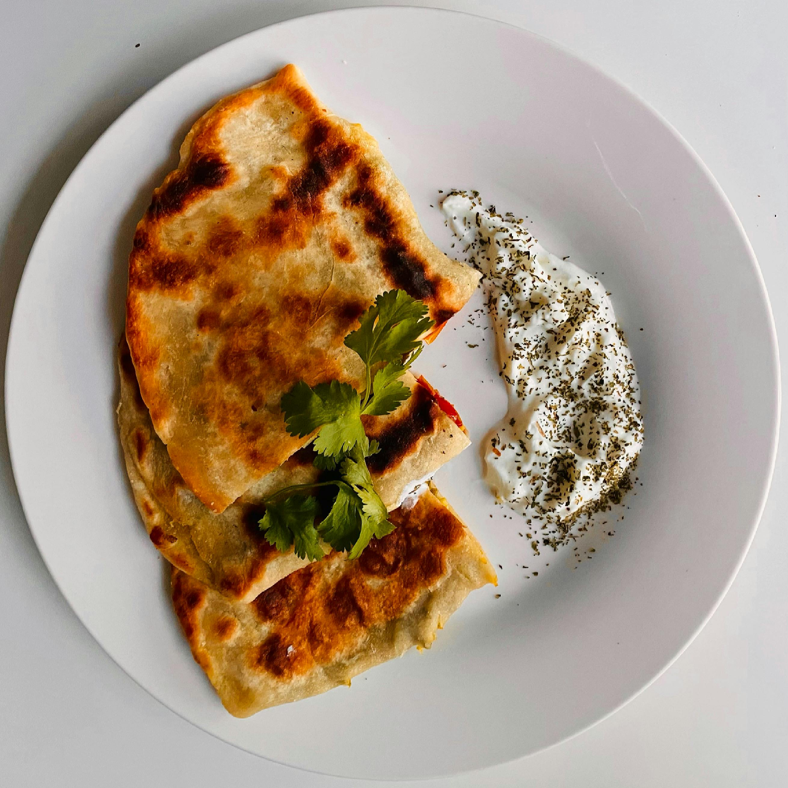

Home
Quesadilla

Description
This simple quesadilla recipie won't knock your socks off but it sure makes for a quick lunch when you're on the go or don't feel like cooking!
Ingredients
- 1 Large Tortilla or 2 Small Tortillas
- 1 cup Shredded Cheese of Choice
- 2 tsp Adobo
- 1 tsp Cumin
- 1 tsp Chili Powder
Steps
- Begin warming your skillet: Before you begin prepping your quesadilla it's reccommended to warm the skillt on low heat while prepping. If you would like you can add a little butter/oil to help with the tortilla sticking to the pan but it is unnecessary.
- Season the cheese: Add all seasonings to the cheese for extra flavor. This can be done in a bowl or on the tortilla(s). Either way give a little mix and add to the cheese to the tortilla(s) if you haven't already.
- Start cooking: With the skillet warmed and on low, place the cheesed tortilla(s) on the skillet. If you're using a large tortilla fold it in half. Otherwise, place a second tortilla on top. Then cover with a lid and let cook for ~3 min.
- Flip: After 3 minutes or so grab a spatula and use it to flip the quesadilla over to the other side. If the cheese hasn't melted yet cover the skillet again. Despite the state of the cheese cook for 3 more minutes then serve fresh.